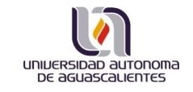

La Sociedad Española de Matemática Aplicada (SEMA), consciente de la necesidad de promover el interés de las jóvenes generaciones por la tarea de la creación científica, convoca el vigésimo tercer Premio SEMA «Antonio Valle» al Joven Investigador.
La convocatoria continúa una tradición, habitual tanto en las Artes como en las Ciencias, que contribuye a incrementar el papel positivo que el aprecio de la comunidad tiene en la vida científica de los investigadores, al tiempo que promueve y estimula el desarrollo en nuestro país de las Matemáticas y sus aplicaciones.
The Journal of Mathematics in Industry, with the support of the European Consortium for Mathematics in
Industry – ECMI, 4
has decided to publish a special issue entitled:
Mathematical models of the spread and consequences of the SARS-CoV-2 pandemics. Effects on health, society, industry, economics and technology.
Some more detailed information on the special issues can found here.
The submission is opened already and will be closed at the end of August 2020.
Accepted papers will be published immediately online and later in Nov/Dec 2020 in
printed format. We prefer LATEX submissions. Some author’s guide is available
here.
At the end of this page you find a link for the “Springer LATEX submission template”, that
can be edited in OverLeaf (a free online LATEX system) or downloaded as used with any
other LATEX processing system.
La revista Journal of Nonparametric Statistics 5 ha lanzado un llamamiento para recibir artículos para un número especial relacionado con la covid-19, titulado
Este número especial está pensado con un enfoque algo más amplio del habitual. En principio se considera cualquier artículo con enfoque de Data Science, no necesariamente basado en métodos no paramétricos. Los artículos más matemáticos, siempre que presenten un enfoque en este sentido de Data Science, también podrían considerarse.
Fecha límite: 31 de octubre de 2020.
http://amercado.mat.utfsm.cl/SeminarioLatAm-Esp_ControlyPI/
Este seminario 6 corresponde a una iniciativa en el contexto de la covid-19, a causa de la cual se han suspendido conferencias, cursos y visitas científicas en casi todos nuestros países.
En el ánimo de continuar trabajando y alentar colaboraciones científicas, este espacio está destinado a investigadores y estudiantes de Latinoamérica y España interesados en control de ecuaciones diferenciales, problemas inversos y temas relacionados.
El seminario se lleva a cabo los lunes a las 17:00 hrs GMT+2 (hora de España), por medio del sistema de videoconferencias Zoom. Para ser incluido en la lista de correo, hay que enviar un mensaje a la dirección alberto.mercado@usm.cl. El enlace para conectarse a las charlas será enviado periódicamente a la lista.
Comité Organizador Local
Departamento de Matemáticas
Universidad de Oviedo
https://cedya2020.es
_____________
El próximo congreso de nuestra sociedad se celebrará en Gijón. En esta ocasión, la sede del XXVI Congreso de Ecuaciones Diferenciales y Aplicaciones / XVI Congreso de Matemática Aplicada será la Escuela Politécnica de Ingeniería de Gijón de la Universidad de Oviedo, que nos cede parte de sus instalaciones durante toda la semana para la celebración del encuentro bienal de la SEMA.
Además de las conferencias plenarias y las contribuciones individuales enviadas por distintos investigadores, gran parte del congreso se dedicará a la celebración de minisimposios organizados por varios grupos de investigación. También tendremos, como viene siendo habitual en las últimas ediciones, una sesión de pósteres. Los ponentes que lo deseen, podrán enviar un resumen extendido de su comunicación para el libro de actas del congreso.
La SEMA otorgará un premio al mejor póster presentado el congreso. El plazo para enviar un resumen de 100 palabras para un póster termina el 31 de marzo de 2020.
Cada día empezaremos el congreso con dos conferencias plenarias a cargo de colegas de reconocido prestigio internacional seleccionados por el comité científico del congreso.
El CEDYA / CMA 2020 Gijón contará con los siguientes 17 minisimposios:
Organizado por: Yáñez-Avendaño, Dionisio (Departamento de Matemáticas, Universidad de Valencia), Ruiz, Juan (Departamento de Matemática Aplicada y Estadística, Universidad Politécnica de Cartagena), Trillo, Juan Carlos (Departamento de Matemática Aplicada y estadística, Universidad Politécnica de Cartagena)
Organizado por: Barreras, Álvaro (Universidad Internacional de La Rioja), De Terán Vergara, Fernando (Universidad Carlos III de Madrid)
Organizado por: Grupo de Sistemas Dinámicos de la Universidad de Oviedo
Organizado por: Roldán, Teo (Universidad Pública de Navarra), Rández, Luis (Universidad de Zaragoza)
Organizado por: Fernández Martínez, Juan Luis (Universidad de Oviedo)
Organizado por: Gutiérrez Jiménez, José Manuel (Universidad de La Rioja), Hernández-Verón, Miguel A. (Universidad de La Rioja)
Organizado por: Molino, Alexis, Martínez Aparicio, Pedro J. (University of Almería) and Segura de León, Sergio (Universidad de València)
Organizado por: Quintela Estévez, Peregrina (Universidade de Santiago de Compostela; Red Española Matemática – Industria), Coll Vincens, Bartomeu (Universitat de les Illes Balears)
Organizado por: Vázquez Cendón, Carlos (Universidade da Coruña)
Organizado por: Rösch, Arnd (U. Duisburg-Essen)
Organizado por: Rodríguez Bellido, María Ángeles (Universidad de Sevilla), Morales Rodrigo, Cristian (Universidad de Sevilla), Shmarev, Sergey (Universidad de Oviedo)
Organizado por: Reguera López, Nuria (U. de Burgos), Portillo de la Fuente, Ana María (U. de Valladolid), Moreta, María Jesús (Universidad Complutense de Madrid)
Organizado por: Red Española de Control Óptimo y Problemas inversos COPI
Organizado por: Álvarez-Caudevilla, Pablo, Brandle, Cristina and Colorado, Eduardo (U. Carlos III Madrid)
Organizado por: Chacón Rebollo, Tomás (Universidad de Sevilla)
Organizado por: Belmonte, Juan (UCLM), Martinez Gonzalez, Alicia (UCLM)
Organizado por: Heuer, Norbert (P. Universidad Católica de Chile) and Meddahi, Salim (Universidad de Oviedo)
Los autores que lo deseen, podrán enviar un resumen de su comunicación para su publicación en el libro de actas del congreso. Se editará un libro con ISBN que será depositado en el Repositorio Institucional de la Universidad de Oviedo.
El resumen tendrá entre 4 y 8 páginas y deberá ser enviado a info@cedya2020.es.
La inscripción en el congreso es independiente del proceso de propuestas científicas y se realiza online a través de la Fundación Universidad de Oviedo. No está previsto admitir inscripciones on-site.
La Secretaría Técnica del CEDYA2020 se ha puesto en contacto con diferentes hoteles. Hemos negociado tarifas especiales para los participantes en el congreso.
Se puede encontrar información detallada en la página web oficial de la Oficina de Turismo de Gijón. En el momento de escribir estas líneas, estamos negociando descuentos especiales con ALSA, RENFE e IBERIA. Informaremos de ello mediante el Newsletter del congreso y las redes sociales de la SEMA.
María Luz Muñoz Ruiz
Universidad de Málaga
https://edanya.uma.es/hyp2020/
__
El comité científico del congreso XVIII International Conference on Hyperbolic Problems: Theory, Numerics, Applications (HYP2020) que se celebrará en Málaga entre el 22 y el 26 de junio de 2020, ha decidido instituir el Premio Peter Lax en honor a las contribuciones seminales de este eminente matemático, que establecieron las bases de los modernos métodos teóricos y computacionales en el área de los sistemas hiperbólicos de leyes de conservación. Esta distinción será concedida a un joven investigador (10 años a lo sumo tras la defensa de su tesis doctoral) en cada congreso de la serie Hyp. El premiado será invitado a impartir una conferencia plenaria distinguida en el congreso.
Tras un cuidadoso proceso de selección, el comité científico ha decidido otorgar el primer Premio Peter Lax, por sus brillantes contribuciones a la teoría matemática de la mecánica de fluidos, a Jacob Bedrossian.
El comité científico ha decidido a su vez instituir la Conferencia James Glimm como parte constitutiva de todas las ediciones de los congresos HYP, denominada así en honor al insigne matemático, cuyas innovadoras ideas revolucionaron el área de investigación de las leyes de conservación hiperbólicas. Esta conferencia será impartida por un investigador senior de reconocido prestigio en el ámbito de las ecuaciones hiperbólicas.
El investigador seleccionado para inaugurar esta serie de conferencias distinguidas en la edición de Málaga es Constantine M. Dafermos.
Jean Jacques Moreau était un mécanicien et mathématicien visionnaire, auteur de travaux fondamentaux dans de vastes domaines allant de l’analyse convexe à la dynamique non régulière. On lui doit notamment l’introduction de l’hélicité (un invariant des équations d’Euler), des contributions fondamentales en analyse convexe en dimension infinie (fonctions proximales, dualité, etc.), l’introduction du processus de rafle par un convexe mobile et des résultats profonds sur la formulation et la résolution de la dynamique des systèmes avec impacts et frottement.
Jean Jacques Moreau est décédé en 2014 et la Société de Mathématiques Appliquées et Industrielles (SMAI) et la Société Mathématique de France (SMF) ont créé en 2018 un prix pour honorer sa mémoire.
A l’occasion de la première attribution de ce prix sous le parrainage de l’Académie des Sciences, une journée d’hommage à Jean Jacques Moreau est organisée le 27 mars 2020 pour montrer l’influence très actuelle de ses travaux et l’illustrer par les progrès les plus récents.
Cette journée du 27 mars 2020 se déroulera en 2 temps et sur 2 sites, le matin au Collège de France avec un exposé du lauréat 2019 du prix Moreau sur les liens entre optimisation et apprentissage profond (F. Bach) et l’après-midi au Laboratoire Jacques-Louis Lions à Jussieu avec 3 exposés qui évoqueront des domaines chers à JJ Moreau en optimisation, processus de rafle et dynamique non régulière (G. Buttazzo, B. Maury, V. Acary).
Plus d’informations sur https://jj-moreau.sciencesconf.org/.
http://numericsday.math.umd.edu
SAYAS NUMERICS DAY (formerly DelMar Numerics Day) is an annual workshop which aims to display the research diversity of computational mathematics in Maryland, Delaware and vicinity.
The meeting is named in honor of Francisco Javier Sayas (1968-2019). In addition to his many other achievements, he played a key role in establishing and running DelMar Numerics Day, and was dedicated to its mission of giving especially younger mathematicians an opportunity to share their work.
SAYAS NUMERICS DAY will be held on Saturday, May 9, 2020 from 9:00am to 5:50pm at the University of Maryland, Baltimore County.
The keynote talk will be Nonlocal Modeling, Analysis and Computation: Recent Developments by Qiang Du (Columbia University).
In addition there will be 12 contributed talks, selected by the scientific committee to represent diverse topics of research in computational mathematics.
Registration is free. We particularly encourage graduate students and young researchers to attend and submit talks. The deadline for submitting talks is April 12, 2020.
Francisco Santos
Chair of the Organizing Committee
Universidad de Cantabria
https://dmd2020.unican.es/index.html#top
_____________________________________
The Discrete Mathematics Days will take place at Universidad de Cantabria in Santander (Spain), in June 10-12, 2020. This is an international conference on current topics in Discrete Mathematics, with focus including (but not limited to):
The previous two editions were held in Sevilla in 2018 (http://congreso.us.es/dmd2018/) and in Barcelona in 2016 (https://web.archive.org/web/20170504215505/, http://discretemath.upc.edu/jmda16/), inheriting the tradition of the Jornadas de Matemática Discreta y Algorítmica (JMDA), the Spanish biennial meeting on Discrete Mathematics that has been taking place since 1988.
The program consists of four plenary talks, a number of shorter contributed talks in two parallel sessions, and a poster session. The four plenary speakers are:
If you wish to contribute a talk or a poster, please submit an extended abstract (at most six pages) by March 25, 2020.
See further instructions at https://dmd2020.unican.es/submission.html.
Submissions will be reviewed and accepted by our Program Committee. In order to be accepted for the conference, submissions must contain original and interesting research in the area of discrete mathematics. If too many acceptable talks are received the PC may ask some of them to be presented as posters instead.
The extended abstracts of accepted talks and posters will be made available at the web of the workshop and published electronically by the Editorial of the Universidad de Cantabria, including DOI and ISBN codes.
For more information please visit our website: http://dmd2020.unican.es.
María Eugenia Pérez Martínez
Universidad de Cantabria
http://www.pdmi.ras.ru/EIMI/2020/IMSE/index.html
_____________________________________
Se anuncia la celebración del congreso International Conference on Integral Methods in Science and Engineering (IMSE 2020), que tendrá lugar en St. Petersburg, Department of Steklov Mathematical Institute RAS, San Petersburgo, Rusia, del 13 julio de 2020 al 17 de julio de 2020.
Coorganizadores: Euler International Mathematical Institute and Saint Petersburg State University.
_____________________________________ ◇◇◇_____________________

_____________________________________ ◇◇◇_____________________

Upcoming BCAM courses have been postponed. Registered participants have been informed and new dates will be announced briefly.
Student grants are available for these courses. If you are interested in attending one of them sign-up and apply for one of the grants in the registration form.
This talk will be streamed online and users will be welcome to join using the video conferencing tool Zoom.
This conference has been postponed and it will take place 24-29 May 2021 in Bilbao.
This conference has been postponed. The new date will be 1-4 June 2021.
This activity has been cancelled. Participants will be contacted in the following weeks regarding the refund of the fee.
_____________________________________ ◇◇◇_____________________
Nuria Reguera López
Universidad de Burgos
_______________

Se buscan candidatos para realizar el máster «Maestría en Ciencias con opciones a la Computación, Matemáticas Aplicadas» de la Universidad Autónoma de Aguascalientes (México) con opción a una beca del Gobierno de México.
Para más información: Nuria Reguera (nreguera@ubu.es).
_____________________________________ ◇◇◇_____________________
4.Esta información ha sido extraída de la página web del European Consortium for Mathematics in Industry y de la información difundida por correo electrónico por Matthias Ehrhardt, Universidad de Wuppertal.
5.Esta información ha sido difundida por Alfonso Gordaliza, coordinador del comité de expertos de la Acción Matemática contra el Coronavirus, Comité Español de Matemáticas (CEMat).
6.Esta información ha sido tomada de la página web de este seminario.